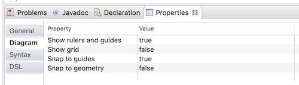
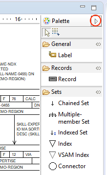
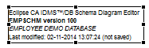

Schema Editor
Contents
Opening the Schema Editor
The Schema Editor is the component with which you can work on CA IDMS/DB schema diagrams. You can
open open as much diagrams in parallel as you want and the editors are always placed in the
workbench's editor area.
Opening a diagram (a .schema or .schemadsl file) is as easy as double-clicking it in the Package Explorer view, or
selecting it in that view and pressing the F3 key. If, for whatever reason the diagram is opened
with another editor (e.g. the Text Editor), right-click on the .schema (or .schemadsl) file in the Package Explorer
view and select the Schema Editor:
When you open the Employee Demo Database diagram (which you can download
here; save this file in your project folder
and refresh the project in the Package Explorer view), the Schema Editor will open and look like this:
Note how the Properties- and Outline view work together with the Schema Editor (the Employee node in
the Outline view has been selected and expanded to illustrate this). Also note that your diagram may look
somewhat different because of a different screen resolution or font size (you can adjust the diagram font size in the
Diagram Editor's preferences).
The Properties view is a standard Eclipse view and it will always show properties for the current
selection, in whatever editor or view is active. The Outline view is also a standard Eclipse view
and allows to describe the structure of the content in the active editor.
Properties
Syntax tab
Each diagram component has a Syntax tab in the Properties view, which shows you the IDMS schema compiler syntax
(for that component):
Note that for the schema (component), the area-, record- and set syntax is NOT shown. For area syntax, select
the area in the Outline view.
DSL tab
Each diagram component has a DSL tab in the Properties view, which shows you the Schema Editor DSL representation
(for that component):
Note that for the schema (component), the area-, record- and set DSL is NOT shown. For area DSL, select the
area in the Outline view.
Schema properties
To have the Properties view display the schema properties (with a "General", "Diagram" and "Syntax"
tab, like the image below), you have to left-click your mouse somewhere in the Schema Editor's
"white space" (so not on a record, index or any other diagram item). By clicking somewhere in the
Schema Editor's white space, you'll make the schema contained in the active Schema Editor the
current selection.
Note that the value for the 'Comments' property has a blue font and when you move your mouse pointer over it you'll see
that it actually is a hyperlink. To change the schema comments, click on the hyperlink and an edit dialog will appear.
You will see similar hyperlinks elsewhere in the Properties view.
I assume that you are familiar with IDMS schema attributes and thus will not elaborate on them here.
If you select the Properties view's "Diagram" tab, you'll see a couple of interesting diagram
properties (for which you can set the defaults on the main preference page):

Rulers and Guides
When the "Show rulers and guides" option is set to "true", both a horizontal and vertical ruler are
shown; these allow you to add 1 or more guides by clicking on a ruler:
You can change the ruler's units on the diagram editor's main preference page ("Window"/"Preferences"
menu item; choose either "Centimeters" (the default), "Inches" or "Pixels").
Guides make it easier to align diagram figures. Once a guide is created, you can move or delete it
using its handle. To delete a guide, select its handle and press the Delete button (fn+backspace on a Mac).
Note that enabling the "Show rulers and guides" option produces another one: "Snap to guides"
(whereas disabling it will hide the "Snap to guides" property); by enabling both the "Show rulers
and guides" option and the "Snap to guides" option, diagram figures will "snap" to the guides when
you move them, thus making diagram figure alignment even easier.
Grid
Depending on your preferences, the grid will be enabled or not for new and imported schemas; when
the grid is disabled, your diagram items are clearly visible without the background grid:
Enabling the "Show grid" option will show a grid in the diagram editor:
The grid spacing in the current version of the diagram editor is fixed at around half a centimeter;
a future version might make this configurable while respecting the preferred units.
Note that enabling the "Show grid" option produces another one: "Snap to grid"; enabling both the
"Show grid" option and the "Snap to grid" option will make diagram figures "snap" to the grid when
you move them, thus making diagram figure alignment even easier.
Snap to Geometry
Enabling the "Snap to geometry" option will allow diagram figures to be aligned to other figures in
the diagram when you move them.
Area properties
You can manage an area's definition via the Properties view; select an area (in the Outline view) and then use the
Properties view to adjust its properties.
I assume that you are familiar with IDMS area attributes and thus will not elaborate on them here.
Record properties
You can manage a record type's definition via the Properties view; select a record type and then use the Properties
view to adjust its properties.
There are quite a lot of IDMS record attributes to set and I assume that you are familiar with all of them and
thus will not elaborate on them here.
Set properties
You can manage the definition of a set, index or VSAM index via the Properties view; select a set connection (the line
that connects 2 records or an index/VSAM index and a record), set connection label (the set description that is put near
the set connection), index, VSAM index or connector and then use the Properties view to adjust its properties.
There are quite a lot of IDMS setattributes to set and I assume that you are familiar with all of them and thus
will not elaborate on them here.
Zooming
Zooming can be done by either using the "Diagram" menu's "Zoom In" and "Zoom Out" menu items (or
their keyboard shortcuts) or using the zoom level combo:
Changing any of the above options or the zoom level will make the diagram editor dirty because all
of this information is kept in the .schema (or .schemadsl) file.
Undo/Redo
Undo/Redo functionality is available via the standard keyboard shortcuts CTRL+z (undo; Command+z on a Mac) and
CTRL+y (redo; Command+y on a Mac) or via the "Edit" menu's "Undo" and "Redo" menu items.
Saving the diagram
You can drop items from the palette, move items around, change line characteristics, change the
diagram through the Properties view and you can delete items using the Outline view. Note that
validations are being performed when you enter data in the Properties view and that an asterisk
appears to the left of the diagram's file on the editor's tab when you make 1 or more changes:
![[dirty editor mark]](../../images/dirty_editor_mark.png)
The asterisk indicates that your changes have not been saved to disk (the editor is dirty). Saving
your diagram can be done in several ways, e.g. by using the "File"/"Save" menu item or clicking on
the floppy disk icon in the toolbar:
The Palette
If you press the triangle on the top left of the diagram editor, the palette will show; pressing the
triangle (which has been flipped) again will make the palette disappear:

The first 2 palette tools can be used to select 1 or more items in the diagram:
- (Select):
after selecting this tool, clicking on an item in the diagram will make that item the current
selection; the item's properties will be available in the Properties view.
- (Marquee):
after selecting this tool, you can drag an area in the diagram to select 1 or more items; this tool
is currently of little use.
Dropping an item to the diagram is as easy as selecting the tool from the palette and subsequently -
and depending on the tool selected - clicking on 1 or more items, or whitespace, in the diagram:
- General
- (Label):
after selecting this tool and clicking somewhere in the diagram's whitespace, a diagram label will
appear at that location:

There can only be 1 diagram label per diagram. The diagram label's first and last line can be
controlled through the Schema editor's preferences:
Look here for
a description of the date (Last Modified) format.
The diagram label's second line contains the schema name and version whereas the third line can be
controlled in the Properties view (Description).
- Records
- (Record): after selecting this tool
and clicking somewhere in the diagram's whitespace, a new record type will appear at that location. Use the Properties
view to enter the details for the new record type.
- Sets
- (Chained
Set): first click on the owner record and then on the member record of the set that you want to
create; you'll notice that a line, starting at the owner record, will be visible and following the
mouse pointer after clicking the owner record (press the "Esc" key if you change your mind half way
through). A chained set called "NEW-SET-n" will be created after clicking on the member record,
where "n" denotes a sequence number starting with 1. Use the Properties view to enter the details for the new
chained set.
![[multiple-member set tool]](../../images/palette_multiple_member_set.png) (Multiple-member Set):
first click on the line that connects the owner record with an existing member record of the set you
want to add a member record to (remember: indexed sets can only have 1 member record). You'll
notice that a line, starting at the owner record, will be visible and following the mouse pointer
after clicking that line (press the "Esc" key if you change your mind half way through). Then click
on the record that you want to add as a member record of that set. Use the Properties view to enter the details for the
new multiple-member set.
(Multiple-member Set):
first click on the line that connects the owner record with an existing member record of the set you
want to add a member record to (remember: indexed sets can only have 1 member record). You'll
notice that a line, starting at the owner record, will be visible and following the mouse pointer
after clicking that line (press the "Esc" key if you change your mind half way through). Then click
on the record that you want to add as a member record of that set. Use the Properties view to enter the details for the
new multiple-member set.
- (Indexed
Set): first click on the owner record and then on the member record of the set that you want to
create; you'll notice that a line, starting at the owner record, will be visible and following the
mouse pointer after clicking the owner record (press the "Esc" key if you change your mind half way
through). An indexed set called "NEW-SET-n" will be created after clicking on the member record,
where "n" denotes a sequence number starting with 1. Use the Properties view to enter the details for the new indexed
set.
- (Index):
click on the record that you want an index added. An index (system-owned indexed set) called
"NEW-INDEX-n" will be created after clicking on the member record, where "n" denotes a sequence
number starting with 1. Use the Properties view to enter the details for the new index.
- (VSAM Index):
click on the record that you want a VSAM index added. A VSAM index called "NEW-VSAM-INDEX-n" will be created after
clicking on the record, where "n" denotes a sequence number starting with 1. Use the Properties view to enter the
details for the new VSAM index.
- (Connector):
click on the line that connects the owner record of a set with one of its members. A set of 2
connectors will be added, effectively splitting the line in 2. You can (only) add 1 label in the
Properties view for both connectors.
Working with Figures
You can easily drag a figure (a record, index, VSAM index, connector, set connection label or diagram label) to
another location.
Working with Connections
Every set connection is initially a straight line between the owner and member figure (multiple-member
sets will have 1 set connection per set member). You can move both set connection endpoints (marked
in red on the image below) as well as add set connection bendpoints (blue) by moving the handles: